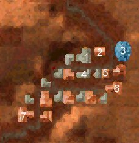

Paradise Valley: City Map

| Paradise Valley | |
| 1. | Singing Steel |
| 2. | The Last Chance (Inn) |
| 3. | Sparring Ground |
| 4. | Mighty Magicks |
| 5. | The Enchated Hauberk |
| 6. | Ancient Wepaons Master (an ancient weapon, and 5,000 gold) |
| 7. | Dark Magic Master (notorius reputation) |
Leave us a message mgrounds@hotmail.com